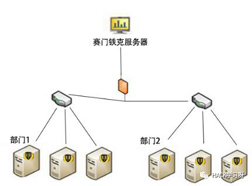

企业安全体系建设之路之系统安全篇

概述:
企业的信息安全体系的建设都是大同小异，只有把握好了风险控制点，一个企业的信息安全完全可以做到相对安全，至少能够防止90%以上的网络攻击，其他的0day漏洞或者新型的攻击手法包括在10%以内，这10%就需要重点监控防御。
一般来说，一个企业想要防御好外部或者内部的攻击，首先企业是想要搞好安全的，否则就算是给了你最好的团队，那也是浪费资源。
安全在于意识和防御，有了出发点，那么一切都顺理成章。
安全这个行业待得久了，就会发现路越来越难走，曾经的技术氛围渐渐不在，搞安全的也渐渐转行，当激情不在，我们还剩下什么？到底我们在追寻什么？安全圈浮躁的人太多，愿初心不变吧。
写这篇文章呢，一是想把自己的经验做个总结，二是想用笔者的经验给企业一点建议和分享。安全不是盲目的，而是有计划，有手段的。
攻击者一般的手段也就那么几样，即使再怎么变，也是万变不离其中，至少这么多年没怎么变过，未来可能稍微会转变方向，但只要掌握了它其中的变化基础，就掌握了其攻击防御的命门。
由于笔者技术水平问题，可能文中会有遗漏或不正确地方，还望批评指出。
全文分5个篇，5个部分，详细的介绍了企业当前面临的各个风险点，从信息安全的几个大点重点描述企业安全体系建设，一个企业再大，只要规划合理，安全管理结构清晰，那么安全建设和保障就不会再是难事。文中有些部分可能不适用于较小企业，因为防御成本的问题嘛！其他国家级的等保体系不在讨论范围内，毕竟对于一般企业来说，也不适用。
目录：
系统安全建设篇
网络安全建设篇
产品安全建设篇
Web安全建设篇
人员安全建设篇
本文纯属个人经验和见解，如有语言不妥之处，还望批评指出。
一：系统安全建设篇
0x00 前言
系统的安全是在企业安全体系建设中的基础，只有系统的安全基线合规，才能够保证其部署在系统上的服务能够安全稳定的运行。
0x01 物理安全
首先，要提到的必须是物理上的安全。
一个安全性高的机房或者公司内部电脑环境保证了企业不被攻击，切实的保障了物理的安全。
当然，还有其他影响机房运行的因素，比如：温度、灰尘、湿度等等。
这里主要讨论，人对物理安全的影响。
从物理攻击的角度来讲，不外乎是与物理设备进行接触，主要有下面几种。
1.存储介质
攻击者可以用U盘来进行攻击，可以提到的是比较出名并且比较成功的就是美国的震网病毒。如果一个机房管理员或者一个员工捡到一个来路不明的U盘，由于人的好奇心驱使，难免会有偷窥他人隐私的心理，而如果恰巧U盘就是一个攻击工具，那么这就将会导致公司内部网络的沦陷。所以存储介质也是要分私用和公用的，不可混用。
2.身份伪造
一个攻击者要进入一家公司或者企业，肯定会经过身份验证。如果恰巧公司安保措施不严，就会让攻击者进入公司内部，获取有价值的信息，严重一点的通过各种社工手段物理接触公司内部网络服务器，盗取各种机密文件或者安装后门，长期实施信息盗取和监控。
3.网络窃听
攻击者通过搭线或者其他手段，在公司网络的出站口搭建监听设备，监控企业网络流量，达到窃取文件的目的。
4.AI攻击
随着时代的发展，人工智能将成为主流，攻击者可以通过自制机器人、无人机等设备绕过人为的监控，达到自身目的。它们可以使用干扰等手段来扰乱当前现状，它们隐蔽性较强，即使被发现，控制人员可以通过销毁程序进行销毁，从而减少背后操控人员风险。
5.硬件攻击
如果企业不小心买到了安装有后门的设备，那么企业所有的安全防护策略都会失效，这将导致企业在安全上的所有努力全部白费。所以一定要选择正规渠道购买设备，并且要在安装组网前进行相关安全检测，以防万一。
那么，企业应该如何防范呢？
首先，企业内外部监控是必不可少的，确保各个重要角落能够无死角监控，进入核心设备需要加强安保，不是加一把锁就能锁住一切，要多重验证，比如多因子验证，要打开或进入一个核心机房需要两个人或者多个人的授权，要多个人的钥匙或者身份验证才能进入。
进入或者登录核心设备需要登记身份信息，对信息进行备案。
落实责任人制度，确保发生安全事件能够找到责任人，这样能够提高安保人员的责任意识，对物理安全的管控也会更深。
相对于物理安全，重要的就是安保，身份验证是重点。
0x02 系统安全
现代社会，一个公司还没有不用计算机的，所以使用计算机就会产生各种各样的问题。
一台不联网的计算机也会受到攻击，大多是物理层面的，如存储介质的交互。对于联网的设备也时时刻刻受到网络木马病毒的攻击威胁，虽然安装有杀毒软件，能够防住大部分攻击，但是少部分木马病毒和高级的攻击手法杀毒软件是防不住的，所以就需要使用者有安全意识来进规避了。
一般做法
1.时常更新杀毒软件版本
2.不允许混用私用和公司计算机
3.不打开来路不明软件和文件
4.勤打补丁
5.配置好计算机自身防火墙
6.对计算机进行安全基线合规配置
攻击者如果要攻击一台服务器一般步骤就是端口扫描、C段、系统漏洞、0Day等手段。下面说一说一般的防护手段。
1.端口
对于企业级服务器设备来说，配置好防火墙是必要的。以前一个案例就是，笔者还在一家公司实习时，每天不断面临外部IP对服务器进行端口扫描，于是想到了一个做法，就是常用的封IP手段，那么我们又要思考，如果对方是一个正常访问者呢？这样会不会对用户造成不好的用户体验，我们也知道，通常一个网站也就开个web端口与用户进行交互，一般的用户访问网站，是不会去尝试访问其他端口的，所以笔者的做法是，如果一个IP扫描5个端口，直接封IP一天。那么这个地方又会有个问题，如果对方使用代理，不就可以全端口扫描了吗？没错，所以在防火墙里配置个策略来欺骗攻击者，无论攻击者扫描那个端口，端口都是开放的，如果效果不好，封住其他端口不会对服务器造成问题的话，那么就直接封死相关端口，不对外开放。
其实这里比较好的做法就是，把设备放到内网，需要哪个端口对外开放就映射哪个端口出去，中间加上防火墙，这样的话，就不怕端口扫描了。
2.日志
系统日志是必不可少的，它能够详细的记录端口扫描、用户登录登出、操作等信息，一旦发生信息安全事件，我们能够第一时间进行攻击溯源。
不过需要记录的是日志的记录最好不要放到同一服务器上，要记录在专门的日志文件系统上，当然日志服务器的安全也要有所保证，日志服务器只接收信息存储，不处理日志信息，处理日志就需要专门的分析工具。这样可以保证日志服务器的安全。
3.C段
外网的C段如同内网的C段，在同一C段意味着他们有相同的网关，一般攻击者在无法攻破C段中的一台机器时，就需要寻找一台C段中安全防护比较薄弱的设备，在这台设备被攻破后，攻击者就能对C段进行信息嗅探，网关挟持等内网能做的一切操作。
防止C段相关攻击最有效的方法就是绑定网关MAC地址或者双重绑定，如果攻击者劫持了网关，而你又不能操控网关的话，可以向网关所有者（运营商）求助，或者自求多福吧。
4.安全基线
基线在系统安全里面也是比较重要的，基线主要包括了漏洞补丁、计算机系统安全配置、防火墙安全配置、数据库安全配置等，配置合规率能够很大程度上提高了系统的安全防御性能。
相关具体的安全配置可以查看各厂家安全配置手册，在网上也是可以找相关基线合规资料的。
0x03 运维安全
运维安全作为企业安全保障的基石，因为运维安全位于最底层，或涉及到服务器、网络设备。基础应用等，一旦出现安全问题，会直接威胁到服务器的安全。而在企业日常运营中，运维安全事件的出现通常预示着这个企业的安全规范、流程有问题，这种情况下就会不止一台机器有同样的漏洞，会是一大片，甚至波及整个公司的核心业务。
运维这个点不是几句话就能说的清楚的，其最核心的问题还是那么几个。
1.弱口令
弱口令是运维安全中的核心问题，比如一台主机被攻陷，由于设备密码大多数都是相同的，很少有运维人员会每个设备都设置不同的密码。所以，一个弱口令就足以导致整个内网服务器的沦陷。
攻击者一般会使用密码字典、拿到密码加密文件、网络嗅探等手段进行攻击，在拿到相关信息时，他们会分析加密的算法，再针对性的进行攻击。
再一个就是口令的防御，都知道，加密只是用于防破解，而密码猜解是不需要知道你的密码是什么算法的，直接用字典穷举。那么这里就会有一个怎么防止这类问题的要求。
首先，密码的设置必须符合密码安全策略，大小写字母数字加特殊字符的组合，长度不低于8位，口令要定期更换，使用随机密码、使用强加密算法，至少不是像base64那样的弱加密算法。至于口令认证的话，需要根据公司自身情况进行而定。
防御只要企业有自己的一套规范，运维有自己的良好安全意识，那么这类攻击成功率是不大的。
2.信息泄漏
结合今年来一些运维相关的信息泄漏事件来看，大多数都是运维不小心把帐号密码上传到网上，如github（代码泄漏）、blog（敏感信息截图），还有的就是被攻击，企业数据库被拖库、企业帐号密码规律性、各种被钓鱼等。
对于这些，企业一定要制定一些规范，建立一个审核机制或者安全操作手册，来减轻或规避一些可能导致信息泄漏的风险点。
3.系统权限
一般来讲，如果不是必须要最高权限启动的服务或应用，最好设置一个普通权限来管理系统，以此来减轻权限所带来的安全风险。
4.系统补丁
时常关注网络安全状态是必要的，最近出了什么漏洞，自身在用设备是否受此漏洞影响，要自身知道。关注自身在用的相关版本，出了漏洞补丁马上进行处理并跟进最新漏洞相关进展。
5.网络攻击
运维人员关注最新的网络攻击时态也是很有必要的，这样可以根据具体的攻击手法来对企业进行防御体系的调整。
6.虚拟化
当前网络安全现状不容乐观，很多的企业选择了虚拟化来管理自身设备，这样的好处是，当设备被攻击后，如果系统或数据被破坏并无法修复时，企业可以选择之前新建的快照进行恢复，进而避免损失。如果换了物理机的话，而企业又没有进行系统的备份，对于企业有可能就是灾难性的。
7.安全域
域的安全在运维里算是重要的了，域的安全性就是内网的安全，这么说一点也不为过。
域最重要的也是弱口令的问题，其次就是域系统的相关配置。域是个很复杂的环境，因为涉及到的范围太广，涉及成员太多，所以就简单的描述一下。
计算机的策略大体上分为四类，他们分别是本地策略，域策略，站点策略以及ou策略。起作用的先后顺序为local policy（本地）——〉site policy（站点）——〉domain policy（域）——〉ou policy。
一般来讲，域主机控制了整个域环境的其他域设备，它还负责整个域的用户权限分配。域的安全主要在配置，严格执行分权策略，相关设备的关联性尽量低权限，只要策略得当，就算其中一台设备被攻陷，那么也是很难拿到域控权限的。
0x04 应用安全
一台计算机肯定是会跑应用的，要不然拿来干嘛。
应用安全，顾名思义就是保障应用程序使用过程和结果的安全。简言之，就是针对应用程序或工具在使用过程中可能出现计算、传输数据的泄露和失窃，通过其他安全工具或策略来消除隐患，一般软件为了增加用户体验，可能会要求收集用户的一些信息，我们可以关闭这个选项。
应用一般来说是属于第三方的，所以，这里就有一个安全应用临界点问题的产生。
许多运维人员认为他们的网络是安全的，因为他们部署了有防火墙，但是，攻击者很有可能攻击应用层，因为在应用层存在更大的漏洞。
比如配置不当、弱口令、软件漏洞等等。举个例子，FTP的远程溢出漏洞，有很多FTP的应用都在早年的版本中存在这个问题，以至于我们向FTP端口发送超过一定字节数将导致FTP崩溃，从而构造EXP攻陷服务器。
系统的相对安全不代表没有办法攻陷系统。
1.应用部署
我们在部署一个应用时，应该考虑到应用场景的方方面面，首先这个产品是否是成熟的，安全性在业界是什么水平，我们都需要知道，从近年来曝光的应用后门来讲，数不胜数，其中包括非常出名的厂商在内。虽然不是他们的刻意为之，但是对于我们用户来讲还是个安全隐患。
应用在部署前，应该做好权限的划分，比如启动apache这类应用，我们应该单独设置一个账户来启动这类应用，而且权限只能限制在服务的范围内。如果条件允许，我们可以考虑用虚拟镜像（如docker）来部署这类应用。
2.沙盒
沙盒是在受限的安全环境中运行应用程序的一种做法，这种做法是要限制授予应用程序的代码访问权限。例如，下载到 Internet Explorer 的控件使用 Internet 权限集运行。驻留在局域网共享上的应用程序在计算机上使用 LocalIntranet 权限集运行-百度百科。
有些时候，我们运行一些应用时，它可能会存在风险，那么在沙盒里运行它可以减少系统风险，纵使有沙盒逃逸这个技术。
在沙盒里运行软件在一些环境下应该还是必要的。
3.未知软件
未知的软件也是威胁应用安全的一部分，比如常见的钓鱼软件，某些攻击者利用受害者心里，通过播放器、外挂等进行木马病毒传播，如果企业员工在家用电脑使用了感染了病毒木马的U盘到企业电脑上使用，那么就会导致企业内网的感染，从而导致一个点全盘扩大的一个过程。
所以，还是那句话，企业制度很重要，私用和公司电脑包括存储介质不可混用，未知软件不可随意点开，一定要先杀毒（尽管杀毒软件并不那么可靠），如果不确定那就不要点开。
4.软件渠道
软件的下载一定要到公司官网里去下载，不要去第三方下载。一个公司应该还是有买一个正版软件的钱，不要用盗版软件，这和安全风险相比还是值得的。购买正版软件还是是对安全的一种投资。
0x05 杀毒安全
有句话怎么说来着：杀毒软件就是最大的病毒软件。
其实，话也不能这么说的这么狠，杀毒软件是我们的安全防卫者，时时刻刻都保护着我们的计算机安全不被入侵，但是呢，杀毒软件开发者为了有更好的杀毒效果和能够防御新型病毒木马，通常他们是会收集一些病毒样本来分析，比如我们常看到的云端杀毒。做的流氓点的就是不通知用户直接上传用户文件样本。
那么在这个上传过程中就出现了信息泄漏的问题。
尽管这些问题杀软厂商是不会承认的，但是事实各人都心知肚明。
那么这里又会有个需求，怎么样来防止此类事情的发生呢？答案是，如果企业自身有条件的话，可以和杀软厂商合作，特别定制版杀软。据笔者了解这方面做的比较好的就是赛门铁克，企业版本可以放到自身内网中，升级操作都是由总服务器代替的下发的，所以可以减少这类问题的产生。
下面画一个草图，大概就是这么个样子。

图1-1
如果公司条件不允许的话，但是又不能电脑裸奔，只能是关闭杀软的上传功能，虽然这会影响到杀毒效果，但是能避免上传敏感信息到杀软厂商那去（虽然说这话连我都不信，不过我们还是要抱点希望），再一个，可能杀软也会像其他应用软件一样，为了增加用户体验，会收集用户的一些信息，我们一样可以关闭这个。
还有杀毒软件一定要在正规渠道下载，比如官网，否则会有什么事情就不可预知了，笔者曾经就遇到过修改过的杀毒软件，引以为鉴。
总之，选择一款好的杀毒软件是很有必要的，杀毒软件用的好，那叫防御，用的不好，那叫后门。

来源：http://imosin.com
作者：mosin